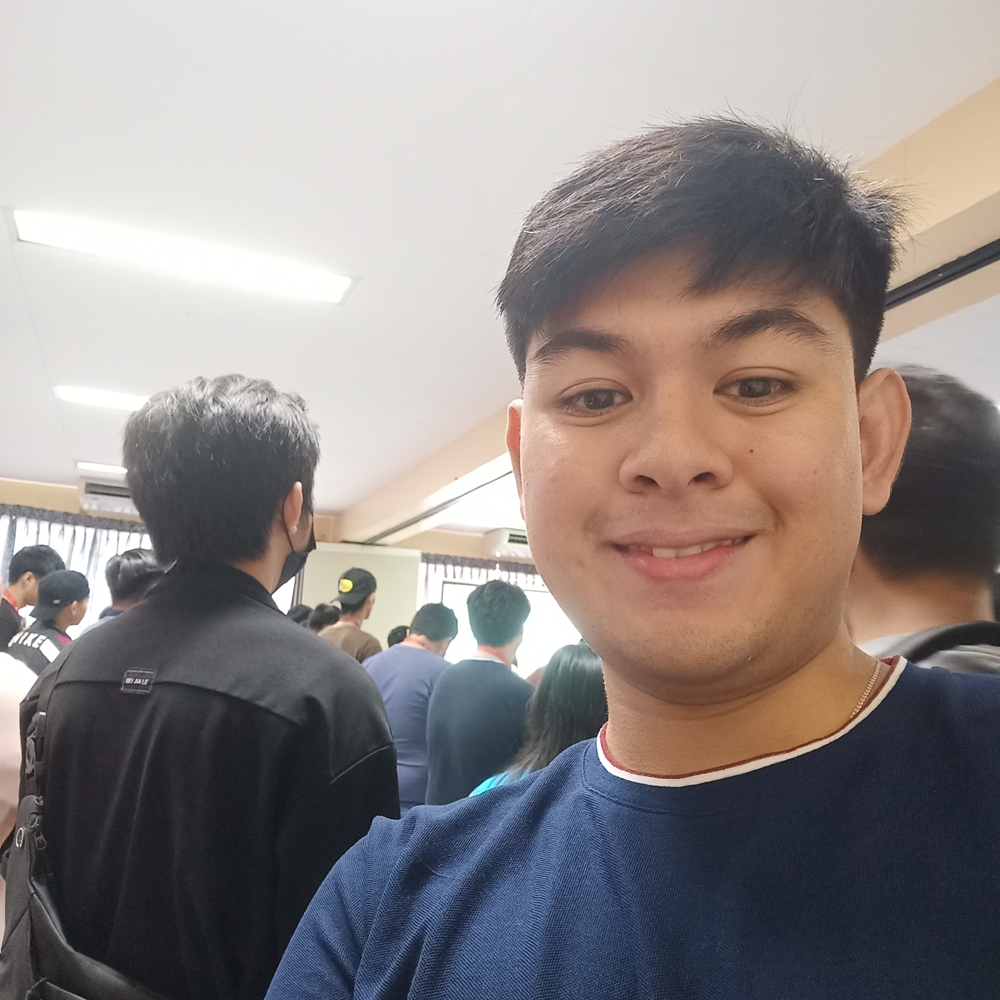
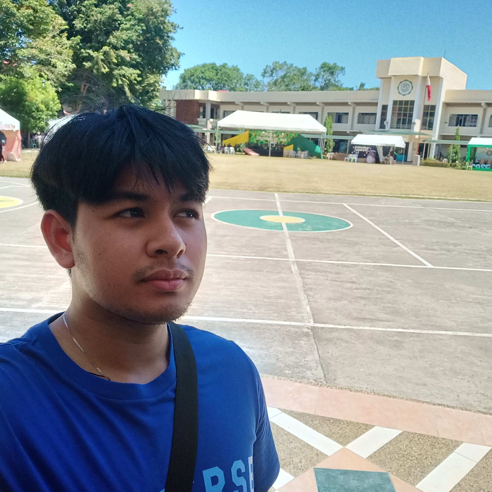
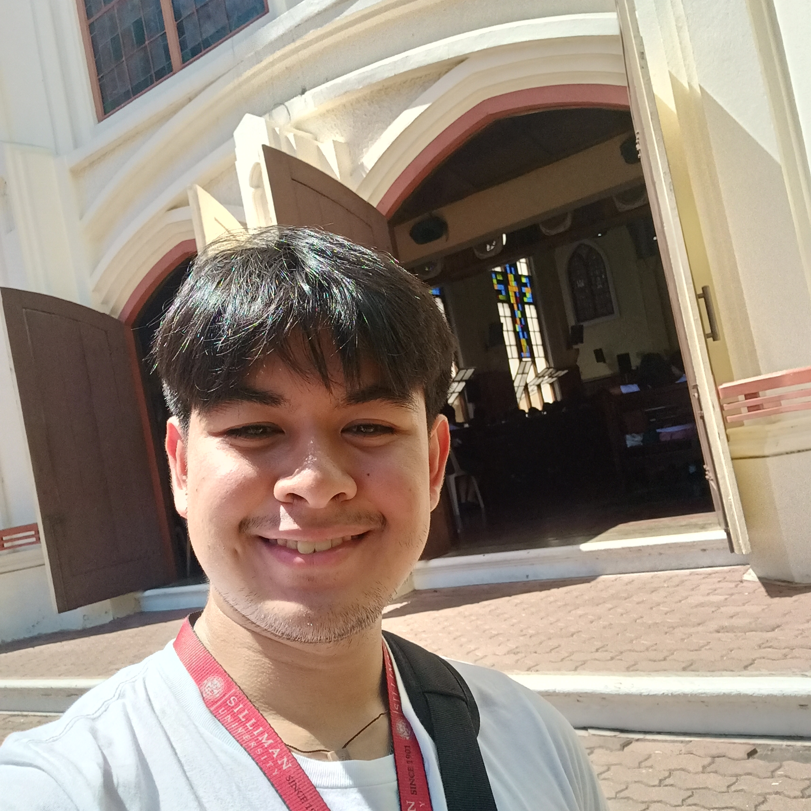
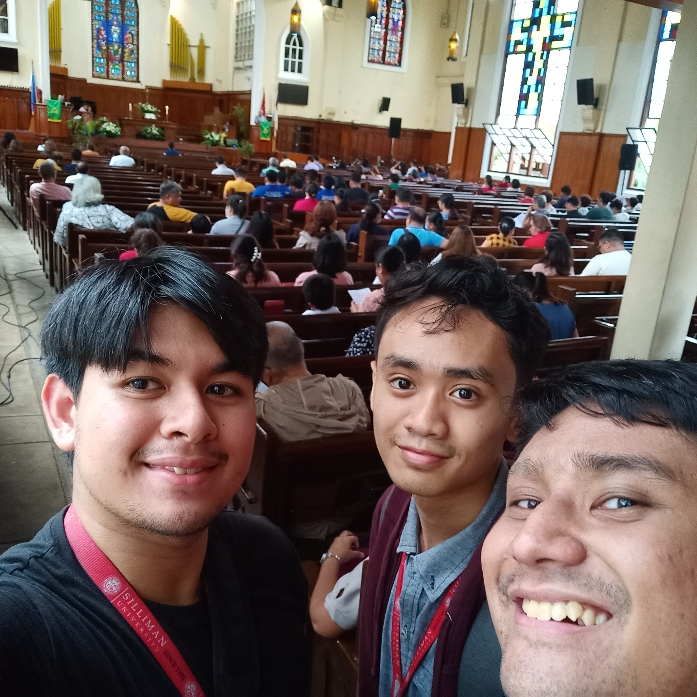
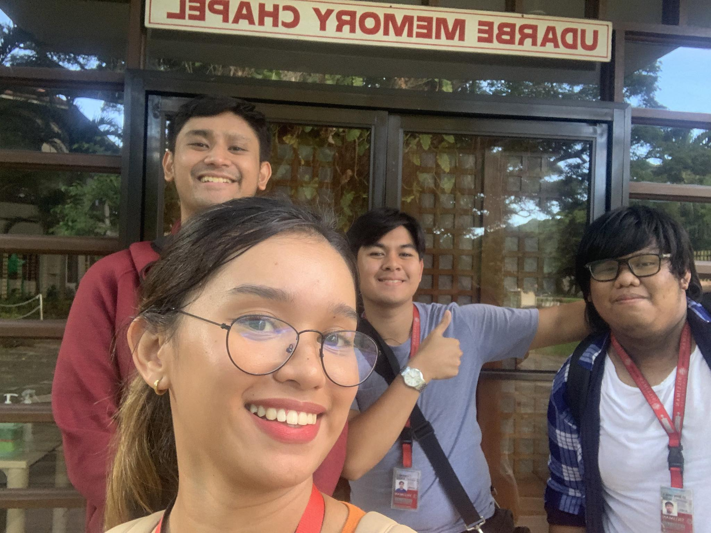
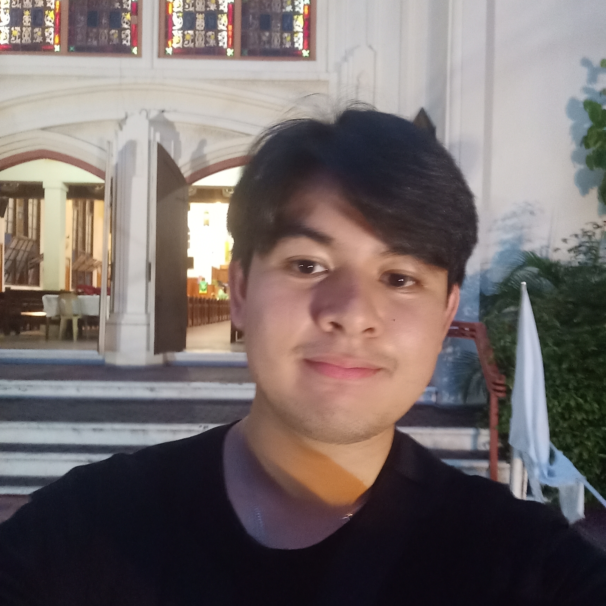
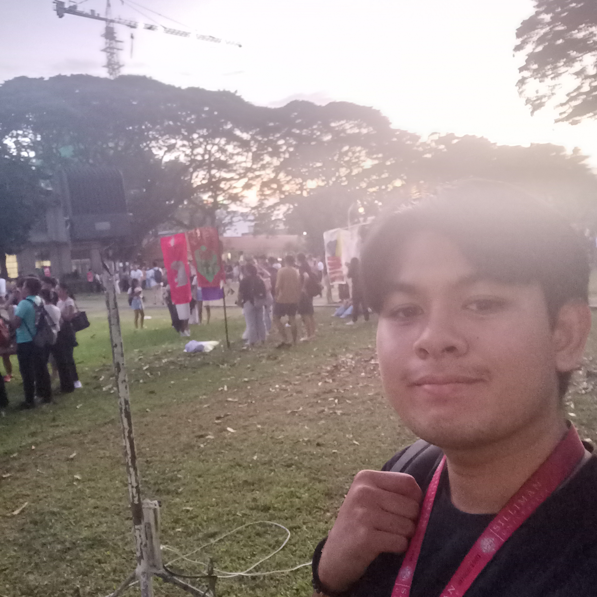
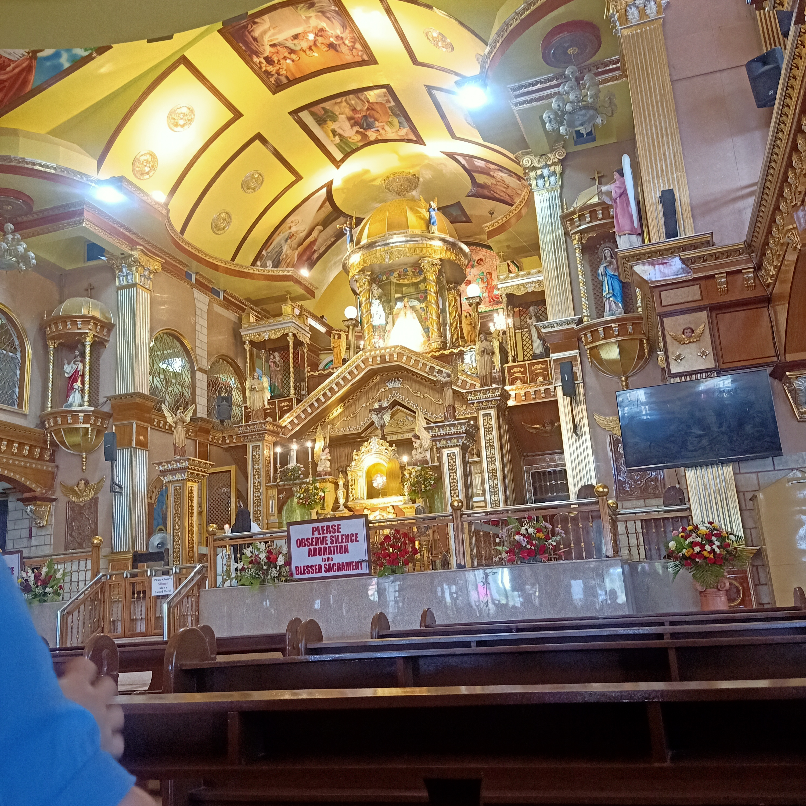

CSS Opening Devotion
Aug.22,2023
Organizer: CCS
Points: 1
Gathering for the opening mass on the first school day initiates a unique beginning.
The ATA hall was very clean and pristine, and the speker chosen was very gripping. We harmonize in song, share
prayers, setting the stage for what the upcoming year might encompass. This event serves as a reminder—a collective step
not solely for academic pursuits but for personal development as well. Though me and my friends were merely observers, we greatly
felt as though we were among those on stage.
The opening mass isn't just about routines; it's a catalyst for collective growth and camaraderie within the school. As we
come together, it marks the initiation of a journey where we're not mere individuals studying in isolation but a community striving
towards common goals. It's in these moments of collective prayer and reflection that we realize the significance of unity and
support among us.
This event embodies a sense of unity, emphasizing that the school isn't merely a place for academic pursuits but a platform for
holistic development. Participating in the opening mass sets a tone, signaling that our school year won't merely be about textbooks
and exams, but also about nurturing ourselves as individuals. It's a shared experience that ties us together and underscores the
importance of communal spirit in our educational journey.
Because of the school opening mass, I feel grounded and connected to my school community, fostering a sense of belonging and
togetherness. Attending this event instills a sense of purpose and optimism within me, setting the tone for a successful academic
year ahead. It reinforces my commitment to learning and reminds me of the values that unite us as a school. This event leaves me
feeling inspired and motivated to embark on this educational journey alongside my peers.
SPUD Founders Day Opening Eucharist
Oct.27,2023
Organizer: SPUD
Points: 1
The founders day opening mass at my old school carries a sense of nostalgia and warmth, resembling a
heartfelt reunion with cherished memories. The University chapel was as clean as the day I left, and hearing from our school chaplain
was very warm, like returning to an old friend. More than just a ceremony, it stands as an opportunity to pay homage to the pioneers
who laid the foundation for our school's identity and success. I felt quite happy to be among the crowd I once stood with for years,
giving me a sensation i had not felt in months.
It serves as a day of rekindling bonds, rejoicing in shared experiences, and expressing gratitude for the nurturing community
that molded us. Each founders day celebration brings forth a collective moment to reconnect with old friends, celebrate milestones,
and honor the traditions that have shaped our school's character over time. It's a time capsule of appreciation for the values
instilled and the support received from the vibrant community that continues to impact our lives.
Walking through the doors of the founders day mass is akin to entering a sanctuary where memories converge with the present. It's
not just about reminiscing; it's about acknowledging the profound influence of the school's history on our personal growth. The
ceremonies, prayers, and communal spirit during this event create an atmosphere that reaffirms our connection to the school's
enduring legacy, instilling a sense of pride and appreciation for our alma mater.
Because of my old school's founders day mass, I am reminded of my roots and the values that shaped me. Attending this event
fills me with a sense of gratitude for the community that played a crucial role in my upbringing. It reconnects me with friends
and teachers, evoking cherished memories of shared experiences. This event instills a deep appreciation for the legacy of the
school and the traditions that bind us together. Ultimately, because of this mass, I am filled with a renewed sense of pride in
being part of such a vibrant and influential community.
UCLEM First Day
Nov.5,2023
Organizer: UCLEM
Points: 1
Embarking on the school's Christian month feels like plunging into profound significance. The School Chapel was
very well organized and set-up, while the speaker chosen was very articulate and interesting to listen to.
There's an electric buzz resonating across campus—a palpable sense of togetherness and introspection. This period becomes an
avenue to delve deeper into our convictions, fostering connections that transcend our individual selves. Me and my friends observed
from the back as we were not part of the organizing body.
The onset of the school's Christian month marks a meaningful juncture in our collective journey. It's not just a series of
events; it's an opportunity for us to pause and collectively explore the essence of our beliefs. The campus hums with an undeniable
energy—a shared vibe that amplifies our sense of community and contemplation. This period allows us to strengthen our spiritual
connections, forging deeper bonds with one another through our shared faith. It's remarkable to witness how faith serves as a powerful
bond, uniting us as a school family.
Launching into the school's Christian month feels deeply significant, beyond the surface level of activities. It's a time where our
school community converges to emphasize faith and its relevance in our lives. The spirited atmosphere reverberating across campus
infuses us with a sense of unity and introspection. It's a phase dedicated to nurturing and expanding our beliefs, fostering connections
that extend beyond ourselves. Witnessing the collective involvement reinforces the belief in faith as a potent force that binds us together.
Because of my school's Christian month, I am more connected to my school community, finding a shared bond through faith. Attending
events during this month brings a sense of togetherness and reflection, allowing me to explore and deepen my beliefs. I feel a
stronger connection with others, realizing that faith is a powerful force that unites us. This event encourages a deeper understanding
of spirituality and strengthens our relationships within the school.
Christian Convocation
Nov.8,2023
Organizer: Silliman University
Points: 1
The school's Christian Convocation feels like a grounding moment in the midst of
everything else going on. The school church was once again very clean and organized and the speaker again was
well prepared and preached well. There's a comforting sense of unity as we come together, regardless of
backgrounds or differences, to explore our spiritual connections. It's a reminder that our school isn't just
about academics; it's also a place to nurture our beliefs and values, and that's pretty special. Me and my friends were
just observers to the event.
The school's Christian Convocation stands as an anchoring pause amidst the whirlwind of bustling activities on
campus. It's a poignant reminder to step back from the frenzy and refocus on our spiritual bearings. Gathering
during this event is more than just a scheduled assembly; it's a collective endeavor to recalibrate our thoughts and
center ourselves around our faith. The shared atmosphere of contemplation and reverence creates a powerful sense of
solidarity, binding us together regardless of our diverse backgrounds. It's in these moments of unity that the richness
of our school community emerges, showcasing the depth beyond academic pursuits.
This convocation serves as a testament to the holistic nature of our educational institution. Beyond textbooks and
lectures, it emphasizes the value of nurturing our spiritual growth. It underscores the significance of this communal
reflection, offering us an invaluable opportunity to cultivate not just our minds but also our beliefs and values. The
event encapsulates the essence of our school—a place where intellectual enlightenment converges harmoniously with the
nurturing of our faith, fostering an environment that treasures both academic excellence and the development of our spiritual selves.
Because of my school's Christian Convocation, I feel more connected to my faith and my school community. Attending
this event instills a sense of unity and reflection, reminding me of the importance of spiritual connections. It
strengthens my belief in the values we share, creating a shared sense of purpose among us. Ultimately, because of this
convocation, I feel more grounded and inspired in both my faith and my place within the school.
Bible Study
Nov.9,2023
Organizer: Students from Divinity School
Points: 1
Joining a Bible Study feels like sitting down with friends for a deep chat.
The Udarbe Memory Chapel was a good choice, due to it's smaller area the activity felt more intimate and the group of
presiders felt very approachable and as if you'd have known them for a very long time. There's this warmth in discussing
different interpretations and sharing personal insights. It's a space where questions are welcomed, and everyone's perspective matters.
It's pretty cool to see how ancient texts can spark meaningful conversations and bring us closer as a group.
Participating in a Bible Study is like entering a circle of trusted friends, where we engage in profound discussions
that transcend time. It's not just about revisiting ancient stories; it's about unraveling their relevance in our
contemporary existence. Amidst these gatherings, there's an undeniable warmth in the air, as diverse interpretations
are exchanged, interwoven with personal anecdotes and reflections. This space is a sanctuary where curiosity is embraced,
and each individual's viewpoint holds significance, fostering an environment of inclusivity and respect. Witnessing the
resonance of these age-old texts with our lives today sparks illuminating conversations that draw us closer together, forming
a shared bond built on mutual exploration and understanding.
Engaging in a Bible Study serves as a bridge between timeless wisdom and our present realities, knitting threads of ancient
narratives into the fabric of our lives. It's an enriching experience to collectively unearth the layers of meaning within
these texts, each layer offering new insights and perspectives. The beauty of these discussions lies in the diversity of
thoughts and interpretations, painting a mosaic that reflects the uniqueness of each participant. As we navigate through
these ancient stories and relate them to our modern contexts, this shared exploration not only deepens our understanding but
also cultivates a sense of unity and camaraderie among us, underscoring the profound impact of these texts in shaping our
collective journey.
Because of my school's Bible study, I feel more connected to others and to the teachings within the scriptures. Attending
these sessions has deepened my understanding of ancient stories and how they relate to our lives today. I've found a space
where my questions are welcomed and where everyone's thoughts matter. Overall, because of this event, I am more enriched
spiritually and feel a sense of community with those sharing this exploration.
Galilean Mass
Nov.22,2023
Organizer: UCLEM
Points: 1
Starting a week of worship activities with a Mass feels like laying down the
foundation for something special. Once again, the school chapel was very well organized and instead of a single speaker,
we had individual speakers come talk to different groups which was well done. There's a certain energy in the air, a feeling of anticipation
and unity as we gather to begin this journey of spiritual exploration. It's a reminder that the week ahead
won't just be about routines. Among me and my group, it certainly brought us closer from strangers to friends.
Commencing a week of worship activities with a Mass feels like initiating a cornerstone for an extraordinary
journey. It's not just about that single event; it's about laying a sturdy foundation that reverberates throughout
the upcoming days. This initial Mass encapsulates the essence of the week ahead, imbuing it with a sense of purpose
and unity among participants. There's an unmistakable buzz in the atmosphere, an aura of excitement and anticipation
as we assemble to embark on this collective venture into spiritual exploration. It sets the stage for a series of days
that won't merely revolve around routine activities but will instead focus on forging deeper connections with our faith
and each other, fostering a powerful sense of communal bonding.
The Mass inaugurating the week of worship acts as a guiding light, steering us towards a journey of shared reverence and
introspection. Beyond its symbolic significance, this event marks the beginning of a meaningful expedition where our
spiritual pursuits take center stage. The unity felt within the congregation as we gather reinforces the idea that the
week won't merely be about attending services; it'll be an immersive experience dedicated to strengthening our ties with
faith and fellow participants. It serves as a poignant reminder that in the coming days, our focus will be on nurturing
spiritual connections and fostering a profound sense of community through shared worship activities.
Because of my school's Galilean Mass, I feel more connected to my faith and the community around me. Attending this
event has deepened my understanding of spiritual teachings and their relevance in my life. I've found a sense of belonging
and support within the shared experience of worship. Ultimately, because of this event, I am more grounded spiritually
and feel a stronger sense of unity with others sharing this journey.
Galilean Fellowship
Nov.22,2023
Organizer: UCLEM
Points: 1
Talking about our Christian experiences in a group setting feels like
discovering a bunch of different puzzle pieces that somehow fit together. The location on the grounds behind the amphitheatre were
perfect as it felt as if we were gettingg settled in for a picnic, we had the same speaker from the mass in our group so I need not say more on that
There's this feeling of connection, knowing that others might have gone through similar things
or have different perspectives that can open up new insights. It's pretty cool to see how everyone's
journey adds to this bigger picture of faith and spirituality. I was an observer at this event.
Engaging in discussions about our Christian experiences within a group setting resembles piecing together
a mosaic, where each person's narrative forms a unique yet interconnected part of the larger picture. It's
less about possessing all the answers and more about embracing the diversity of stories, uncertainties, and
pivotal moments that have influenced our beliefs. Within this collective sharing, there's a profound sense
of connection, recognizing that others may have encountered comparable experiences or offer perspectives that
illuminate fresh insights. It's fascinating to witness how each individual's journey contributes to this collective
tapestry of faith and spirituality, painting a comprehensive picture that transcends singular perspectives and enriches
our understanding of our shared beliefs.
The group setting fosters an environment where everyone's voice holds significance in shaping the collective discourse
of Christian experiences. It's a space free from judgment, encouraging the exploration of personal encounters and beliefs.
This open exchange allows us to not only reflect on our own journey but also gain valuable insights from others' diverse
paths, broadening our perspective on spirituality and deepening our understanding of faith. It's within these discussions
that the richness of our shared experiences unfolds, reminding us of the collective wisdom and strength derived from the
collection of individual stories.
Because of my school's Galilean fellowship, I feel more connected to my faith and the people around me. Attending this
event has allowed me to openly share my beliefs and experiences while hearing others' stories. It's created a sense of
unity and support within our community. Because of this event, I am more grounded spiritually and feel a stronger
bond with those who share similar beliefs.
Simala Shrine Healing mass
Nov.25,2023
Organizer: Simala Shrine Monastery
Points: 1
Attending the healing mass at Simala Shrine in Cebu feels like being surrounded
by a wave of hope and faith. Both the interior and exterior of the place was amazing and breathtaking, I
had never seen anything like it before. As for the priest, he was very reverent and enthralling. There's an
undeniable sense of belief in the air, a collective energy that's both comforting and empowering. Witnessing the
fervent prayers and seeing the devotion of everyone gathered there is a reminder of the power of faith and the
incredible strength it can bring in times of need. Me and my friends were just observers.
The experience of attending the healing mass at Simala Shrine in Cebu is akin to being enveloped by a tide
of hope and unwavering faith. It transcends the boundaries of a mere religious service, offering a profound
encounter where individuals converge in pursuit of solace and restoration. What fills the atmosphere is not just
a palpable belief but an encompassing energy—a blend of reassurance and empowerment that resonates throughout
the shrine. Observing the fervent prayers and witnessing the heartfelt devotion of everyone present serves as a
poignant reminder of the immense potency of faith and its remarkable ability to provide solace and strength during
challenging times.
The Shrine becomes a sanctuary where countless souls gather, seeking healing and spiritual reassurance. It's a place
where the collective faith of the community becomes palpable, infusing the air with an overwhelming sense of positivity
and resilience. In these moments, one can't help but feel a profound connection with the unity of purpose and the
unwavering belief that permeates the atmosphere, underscoring the profound impact of collective faith in offering hope
and healing to those who seek it.
Because of the Simala Shrine Healing Mass, I feel a deeper connection to my faith and a renewed sense of hope. Attending
this event has provided me solace and comfort in challenging times. It's a place where prayers are fervent, and the
atmosphere is filled with a strong sense of belief and devotion. Ultimately, because of this event, I am uplifted
spiritually and find strength in the collective faith of the community gathered there.